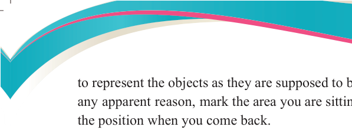
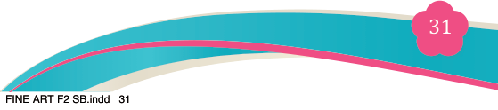
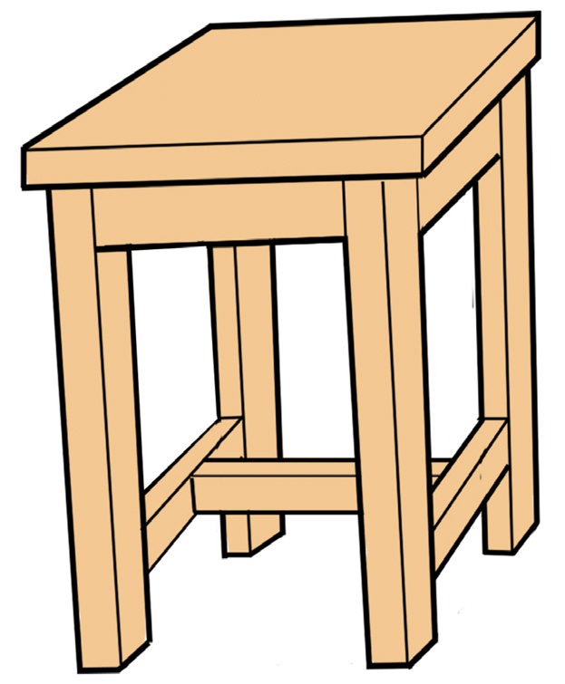
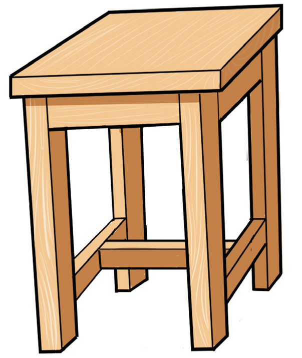

<!DOCTYPE html>
<html lang="en">

<head>
    <meta charset="utf-8" />
    <meta name="viewport" content="width=558, height=768" />
    <title>Fine Art for Secondary Schools</title>
    <meta name="title-id" content="pg037_sec001" />
    <meta name="page-section-id" content="37" />
    <link href="./content/tailwind_output.css" rel="stylesheet">
    <link href="./assets/libs/fontawesome/css/all.min.css" rel="stylesheet">
    <link href="./assets/fonts.css" rel="stylesheet">
    <link rel="preconnect" href="https://fonts.googleapis.com">
    <link rel="preconnect" href="https://fonts.gstatic.com" crossorigin>
    <link href="https://fonts.googleapis.com/css2?family=Caladea&amp;family=Tinos&amp;family=Arimo&amp;display=swap" rel="stylesheet">
    <style>
      html { width: 100%; height: 100%; background: #e5e7eb; }
      body { background: #e5e7eb; }
      #content {
        visibility: hidden;
        background: #fff;
        outline: 1px solid rgba(15, 23, 42, 0.28);
        box-shadow: 0 10px 30px rgba(15, 23, 42, 0.22);
      }
    </style>
    <noscript><style>#content { visibility: visible !important; }</style></noscript>
</head>

<body style="margin:0;overflow:hidden;width:100%;height:100%">
    <main>
      <div id="content" data-fl-reference-width="558" style="position:relative;width:558px;height:768px;margin:0 auto;overflow:hidden">
  
  
  
  
  
  
  
  
  <p data-id="pg037_p000" data-adt-raster-text="1" data-adt-reading-order="9" data-segments="[{&quot;text&quot;:&quot;Fine Art for Secondary Schools&quot;,&quot;style&quot;:{&quot;font-family&quot;:&quot;Caladea,serif&quot;,&quot;font-size&quot;:&quot;9px&quot;,&quot;color&quot;:&quot;#231f20&quot;}}]" data-adt-fit="1" style="position:absolute;z-index:2;top:49px;left:344px;line-height:9px;width:120px;height:9px;white-space:nowrap;opacity:0"><span style="font-family:Caladea,Merriweather,serif;font-size:9px;color:#231f20">Fine Art for Secondary Schools</span></p>
  
  <p data-id="pg037_p001" data-adt-raster-text="1" data-adt-reading-order="41" data-segments="[{&quot;text&quot;:&quot;31&quot;,&quot;style&quot;:{&quot;font-family&quot;:&quot;Caladea,serif&quot;,&quot;font-size&quot;:&quot;12px&quot;,&quot;color&quot;:&quot;#ffffff&quot;}}]" data-adt-fit="1" style="position:absolute;z-index:2;top:704px;left:277px;line-height:12px;width:13px;height:12px;white-space:nowrap;opacity:0"><span style="font-family:Caladea,Merriweather,serif;font-size:12px;color:#ffffff">31</span></p>
  
  
  <p data-id="pg037_p002" data-adt-raster-text="1" data-adt-reading-order="40" data-segments="[{&quot;text&quot;:&quot;Student&#x2019;s Book&quot;,&quot;style&quot;:{&quot;font-family&quot;:&quot;Tinos,serif&quot;,&quot;font-size&quot;:&quot;9px&quot;,&quot;color&quot;:&quot;#231f20&quot;}},{&quot;text&quot;:&quot; Form &quot;,&quot;style&quot;:{&quot;font-family&quot;:&quot;Tinos,serif&quot;,&quot;font-size&quot;:&quot;9px&quot;,&quot;color&quot;:&quot;#231f20&quot;,&quot;font-weight&quot;:&quot;bold&quot;}},{&quot;text&quot;:&quot;Two&quot;,&quot;style&quot;:{&quot;font-family&quot;:&quot;Tinos,serif&quot;,&quot;font-size&quot;:&quot;9px&quot;,&quot;color&quot;:&quot;#231f20&quot;,&quot;font-weight&quot;:&quot;bold&quot;,&quot;font-style&quot;:&quot;italic&quot;}}]" data-adt-fit="1" style="position:absolute;z-index:2;top:703px;left:365px;line-height:9px;width:97px;height:12px;white-space:nowrap;opacity:0"><span style="font-family:Tinos,&apos;Times New Roman&apos;,Times,Merriweather,serif;font-size:9px;color:#231f20">Student&#x2019;s Book</span><span style="font-family:Tinos,&apos;Times New Roman&apos;,Times,Merriweather,serif;font-size:9px;color:#231f20;font-weight:bold"> Form </span><span style="font-family:Tinos,&apos;Times New Roman&apos;,Times,Merriweather,serif;font-size:9px;color:#231f20;font-weight:bold;font-style:italic">Two</span></p>
  <p data-id="pg037_p003" data-adt-reading-order="10" data-segments="[{&quot;text&quot;:&quot;to represent the objects as they are supposed to be. If there is a need to move for&quot;,&quot;style&quot;:{&quot;font-family&quot;:&quot;Tinos,serif&quot;,&quot;font-size&quot;:&quot;12px&quot;,&quot;color&quot;:&quot;#231f20&quot;}}]" data-adt-fit="1" style="position:absolute;z-index:2;top:82px;left:86px;line-height:12px;width:389px;height:16px;white-space:nowrap;letter-spacing:-0.15px"><span style="font-family:Tinos,&apos;Times New Roman&apos;,Times,Merriweather,serif;font-size:12px;color:#231f20">to represent the objects as they are supposed to be. If there is a need to move for</span></p>
  
  <p data-id="pg037_p004" data-adt-reading-order="11" data-segments="[{&quot;text&quot;:&quot;any apparent reason, mark the area you are sitting, so that it is easier to maintain\n&quot;,&quot;style&quot;:{&quot;font-family&quot;:&quot;Tinos,serif&quot;,&quot;font-size&quot;:&quot;12px&quot;,&quot;color&quot;:&quot;#231f20&quot;}},{&quot;text&quot;:&quot;the position when you come back.&quot;,&quot;style&quot;:{&quot;font-family&quot;:&quot;Tinos,serif&quot;,&quot;font-size&quot;:&quot;12px&quot;,&quot;color&quot;:&quot;#231f20&quot;}}]" data-adt-fit="1" style="position:absolute;z-index:2;top:98px;left:86px;line-height:12px;width:389px;height:41px;white-space:pre"><span style="font-family:Tinos,&apos;Times New Roman&apos;,Times,Merriweather,serif;font-size:12px;color:#231f20">any apparent reason, mark the area you are sitting, so that it is easier to maintain
</span><span style="font-family:Tinos,&apos;Times New Roman&apos;,Times,Merriweather,serif;font-size:12px;color:#231f20">the position when you come back.</span></p>
  <p data-id="pg037_p006" data-adt-reading-order="12" data-segments="[{&quot;text&quot;:&quot;Step 2: Mix colours as they appear on the object(s)&quot;,&quot;style&quot;:{&quot;font-family&quot;:&quot;Tinos,serif&quot;,&quot;font-size&quot;:&quot;12px&quot;,&quot;color&quot;:&quot;#231f20&quot;,&quot;font-weight&quot;:&quot;bold&quot;}}]" data-adt-fit="1" style="position:absolute;z-index:2;top:139px;left:86px;line-height:12px;width:389px;height:18px;white-space:nowrap"><span style="font-family:Tinos,&apos;Times New Roman&apos;,Times,Merriweather,serif;font-size:12px;color:#231f20;font-weight:bold">Step 2: Mix colours as they appear on the object(s)</span></p>
  <p data-id="pg037_p007" data-adt-reading-order="13" data-segments="[{&quot;text&quot;:&quot;Test colours using a testing paper to see how well the colours you have\n&quot;,&quot;style&quot;:{&quot;font-family&quot;:&quot;Tinos,serif&quot;,&quot;font-size&quot;:&quot;12px&quot;,&quot;color&quot;:&quot;#231f20&quot;}},{&quot;text&quot;:&quot;mixed match or resemble those you see on the objects portrayed in the\n&quot;,&quot;style&quot;:{&quot;font-family&quot;:&quot;Tinos,serif&quot;,&quot;font-size&quot;:&quot;12px&quot;,&quot;color&quot;:&quot;#231f20&quot;}},{&quot;text&quot;:&quot;still life.&quot;,&quot;style&quot;:{&quot;font-family&quot;:&quot;Tinos,serif&quot;,&quot;font-size&quot;:&quot;12px&quot;,&quot;color&quot;:&quot;#231f20&quot;}}]" data-adt-fit="1" style="position:absolute;z-index:2;top:157px;left:126px;line-height:12px;width:349px;height:49px;white-space:pre"><span style="font-family:Tinos,&apos;Times New Roman&apos;,Times,Merriweather,serif;font-size:12px;color:#231f20">Test colours using a testing paper to see how well the colours you have
</span><span style="font-family:Tinos,&apos;Times New Roman&apos;,Times,Merriweather,serif;font-size:12px;color:#231f20">mixed match or resemble those you see on the objects portrayed in the
</span><span style="font-family:Tinos,&apos;Times New Roman&apos;,Times,Merriweather,serif;font-size:12px;color:#231f20">still life.</span></p>
  <p data-id="pg037_p010" data-adt-reading-order="24" data-segments="[{&quot;text&quot;:&quot;Step 4: Apply tonal values.&quot;,&quot;style&quot;:{&quot;font-family&quot;:&quot;Tinos,serif&quot;,&quot;font-size&quot;:&quot;12px&quot;,&quot;color&quot;:&quot;#231f20&quot;,&quot;font-weight&quot;:&quot;bold&quot;}}]" data-adt-fit="1" style="position:absolute;z-index:2;top:434px;left:86px;line-height:12px;width:139px;height:16px;white-space:nowrap"><span style="font-family:Tinos,&apos;Times New Roman&apos;,Times,Merriweather,serif;font-size:12px;color:#231f20;font-weight:bold">Step 4: Apply tonal values.</span></p>
  <p data-id="pg037_p011" data-adt-reading-order="26" data-segments="[{&quot;text&quot;:&quot;Tones can be added according&quot;,&quot;style&quot;:{&quot;font-family&quot;:&quot;Tinos,serif&quot;,&quot;font-size&quot;:&quot;12.178669929504395px&quot;,&quot;color&quot;:&quot;#231f20&quot;}}]" data-adt-fit="1" style="position:absolute;z-index:2;top:453px;left:126px;line-height:12.178669929504395px;width:168px;height:16px;white-space:nowrap"><span style="font-family:Tinos,&apos;Times New Roman&apos;,Times,Merriweather,serif;font-size:12.178669929504395px;color:#231f20">Tones can be added according</span></p>
  <p data-id="pg037_p012" data-adt-reading-order="27" data-segments="[{&quot;text&quot;:&quot;to how light falls on the objects.&quot;,&quot;style&quot;:{&quot;font-family&quot;:&quot;Tinos,serif&quot;,&quot;font-size&quot;:&quot;12.025971412658691px&quot;,&quot;color&quot;:&quot;#231f20&quot;}}]" data-adt-fit="1" style="position:absolute;z-index:2;top:469px;left:126px;line-height:12.025971412658691px;width:167px;height:16px;white-space:nowrap"><span style="font-family:Tinos,&apos;Times New Roman&apos;,Times,Merriweather,serif;font-size:12.025971412658691px;color:#231f20">to how light falls on the objects.</span></p>
  <p data-id="pg037_p013" data-adt-reading-order="28" data-segments="[{&quot;text&quot;:&quot;Consider the sources of light and the&quot;,&quot;style&quot;:{&quot;font-family&quot;:&quot;Tinos,serif&quot;,&quot;font-size&quot;:&quot;11.834458351135254px&quot;,&quot;color&quot;:&quot;#231f20&quot;}}]" data-adt-fit="1" style="position:absolute;z-index:2;top:485px;left:126px;line-height:12px;width:167px;height:16px;white-space:nowrap"><span style="font-family:Tinos,&apos;Times New Roman&apos;,Times,Merriweather,serif;font-size:11.834458351135254px;color:#231f20">Consider the sources of light and the</span></p>
  <p data-id="pg037_p014" data-adt-reading-order="29" data-segments="[{&quot;text&quot;:&quot;reflections they make on the nearby&quot;,&quot;style&quot;:{&quot;font-family&quot;:&quot;Tinos,serif&quot;,&quot;font-size&quot;:&quot;11.864333152770996px&quot;,&quot;color&quot;:&quot;#231f20&quot;}}]" data-adt-fit="1" style="position:absolute;z-index:2;top:501px;left:126px;line-height:12px;width:174px;height:12px;white-space:nowrap"><span style="font-family:Tinos,&apos;Times New Roman&apos;,Times,Merriweather,serif;font-size:11.864333152770996px;color:#231f20">reflections they make on the nearby</span></p>
  <p data-id="pg037_p015" data-adt-reading-order="30" data-segments="[{&quot;text&quot;:&quot;objects and surfaces. When working&quot;,&quot;style&quot;:{&quot;font-family&quot;:&quot;Tinos,serif&quot;,&quot;font-size&quot;:&quot;11.849556922912598px&quot;,&quot;color&quot;:&quot;#231f20&quot;}}]" data-adt-fit="1" style="position:absolute;z-index:2;top:517px;left:126px;line-height:12px;width:167px;height:16px;white-space:nowrap"><span style="font-family:Tinos,&apos;Times New Roman&apos;,Times,Merriweather,serif;font-size:11.849556922912598px;color:#231f20">objects and surfaces. When working</span></p>
  <p data-id="pg037_p016" data-adt-reading-order="31" data-segments="[{&quot;text&quot;:&quot;with colours, keep the work as neat&quot;,&quot;style&quot;:{&quot;font-family&quot;:&quot;Tinos,serif&quot;,&quot;font-size&quot;:&quot;11.939647674560547px&quot;,&quot;color&quot;:&quot;#231f20&quot;}}]" data-adt-fit="1" style="position:absolute;z-index:2;top:533px;left:126px;line-height:12px;width:167px;height:16px;white-space:nowrap"><span style="font-family:Tinos,&apos;Times New Roman&apos;,Times,Merriweather,serif;font-size:11.939647674560547px;color:#231f20">with colours, keep the work as neat</span></p>
  <p data-id="pg037_p017" data-adt-reading-order="32" data-segments="[{&quot;text&quot;:&quot;as possible. Figure 2.19 is a painted&quot;,&quot;style&quot;:{&quot;font-family&quot;:&quot;Tinos,serif&quot;,&quot;font-size&quot;:&quot;11.912581443786621px&quot;,&quot;color&quot;:&quot;#231f20&quot;}}]" data-adt-fit="1" style="position:absolute;z-index:2;top:549px;left:126px;line-height:12px;width:167px;height:16px;white-space:nowrap"><span style="font-family:Tinos,&apos;Times New Roman&apos;,Times,Merriweather,serif;font-size:11.912581443786621px;color:#231f20">as possible. Figure 2.19 is a painted</span></p>
  <p data-id="pg037_p018" data-adt-reading-order="33" data-segments="[{&quot;text&quot;:&quot;stool developed with a source of&quot;,&quot;style&quot;:{&quot;font-family&quot;:&quot;Tinos,serif&quot;,&quot;font-size&quot;:&quot;12.030960083007812px&quot;,&quot;color&quot;:&quot;#231f20&quot;}}]" data-adt-fit="1" style="position:absolute;z-index:2;top:565px;left:126px;line-height:12.030960083007812px;width:167px;height:16px;white-space:nowrap"><span style="font-family:Tinos,&apos;Times New Roman&apos;,Times,Merriweather,serif;font-size:12.030960083007812px;color:#231f20">stool developed with a source of</span></p>
  <p data-id="pg037_p019" data-adt-reading-order="34" data-segments="[{&quot;text&quot;:&quot;light.&quot;,&quot;style&quot;:{&quot;font-family&quot;:&quot;Tinos,serif&quot;,&quot;font-size&quot;:&quot;12px&quot;,&quot;color&quot;:&quot;#231f20&quot;}}]" data-adt-fit="1" style="position:absolute;z-index:2;top:581px;left:126px;line-height:12px;width:25px;height:16px;white-space:nowrap"><span style="font-family:Tinos,&apos;Times New Roman&apos;,Times,Merriweather,serif;font-size:12px;color:#231f20">light.</span></p>
  <p data-id="pg037_p020" data-adt-reading-order="14" data-segments="[{&quot;text&quot;:&quot;Step 3: \u0007Add details to objects while&quot;,&quot;style&quot;:{&quot;font-family&quot;:&quot;Tinos,serif&quot;,&quot;font-size&quot;:&quot;12.178669929504395px&quot;,&quot;color&quot;:&quot;#231f20&quot;,&quot;font-weight&quot;:&quot;bold&quot;}}]" data-adt-fit="1" style="position:absolute;z-index:2;top:212px;left:88px;line-height:12.178669929504395px;width:205px;height:16px;text-align:right;white-space:nowrap"><span style="font-family:Tinos,&apos;Times New Roman&apos;,Times,Merriweather,serif;font-size:12.178669929504395px;color:#231f20;font-weight:bold">Step 3: Add details to objects while</span></p>
  <p data-id="pg037_p021" data-adt-reading-order="16" data-segments="[{&quot;text&quot;:&quot;observing the still life setting.&quot;,&quot;style&quot;:{&quot;font-family&quot;:&quot;Tinos,serif&quot;,&quot;font-size&quot;:&quot;12px&quot;,&quot;color&quot;:&quot;#231f20&quot;,&quot;font-weight&quot;:&quot;bold&quot;}}]" data-adt-fit="1" style="position:absolute;z-index:2;top:228px;left:126px;line-height:12px;width:167px;height:19px;white-space:nowrap"><span style="font-family:Tinos,&apos;Times New Roman&apos;,Times,Merriweather,serif;font-size:12px;color:#231f20;font-weight:bold">observing the still life setting.</span></p>
  <p data-id="pg037_p022" data-adt-reading-order="17" data-segments="[{&quot;text&quot;:&quot;Add texture starting from the&quot;,&quot;style&quot;:{&quot;font-family&quot;:&quot;Tinos,serif&quot;,&quot;font-size&quot;:&quot;12.178669929504395px&quot;,&quot;color&quot;:&quot;#231f20&quot;}}]" data-adt-fit="1" style="position:absolute;z-index:2;top:247px;left:88px;line-height:12.178669929504395px;width:205px;height:16px;text-align:right;white-space:nowrap"><span style="font-family:Tinos,&apos;Times New Roman&apos;,Times,Merriweather,serif;font-size:12.178669929504395px;color:#231f20">Add texture starting from the</span></p>
  <p data-id="pg037_p023" data-adt-reading-order="18" data-segments="[{&quot;text&quot;:&quot;darkest to the lightest colour tone\n&quot;,&quot;style&quot;:{&quot;font-family&quot;:&quot;Tinos,serif&quot;,&quot;font-size&quot;:&quot;12px&quot;,&quot;color&quot;:&quot;#231f20&quot;}},{&quot;text&quot;:&quot;areas. This will give your objects\n&quot;,&quot;style&quot;:{&quot;font-family&quot;:&quot;Tinos,serif&quot;,&quot;font-size&quot;:&quot;12px&quot;,&quot;color&quot;:&quot;#231f20&quot;}},{&quot;text&quot;:&quot;a sense of realism. Remember that\n&quot;,&quot;style&quot;:{&quot;font-family&quot;:&quot;Tinos,serif&quot;,&quot;font-size&quot;:&quot;12px&quot;,&quot;color&quot;:&quot;#231f20&quot;}},{&quot;text&quot;:&quot;when working with watercolours,&quot;,&quot;style&quot;:{&quot;font-family&quot;:&quot;Tinos,serif&quot;,&quot;font-size&quot;:&quot;12px&quot;,&quot;color&quot;:&quot;#231f20&quot;}}]" data-adt-fit="1" style="position:absolute;z-index:2;top:263px;left:126px;line-height:12px;width:167px;height:64px;white-space:pre"><span style="font-family:Tinos,&apos;Times New Roman&apos;,Times,Merriweather,serif;font-size:12px;color:#231f20">darkest to the lightest colour tone
</span><span style="font-family:Tinos,&apos;Times New Roman&apos;,Times,Merriweather,serif;font-size:12px;color:#231f20">areas. This will give your objects
</span><span style="font-family:Tinos,&apos;Times New Roman&apos;,Times,Merriweather,serif;font-size:12px;color:#231f20">a sense of realism. Remember that
</span><span style="font-family:Tinos,&apos;Times New Roman&apos;,Times,Merriweather,serif;font-size:12px;color:#231f20">when working with watercolours,</span></p>
  <p data-id="pg037_p027" data-adt-reading-order="19" data-segments="[{&quot;text&quot;:&quot;it is somehow very difficult to&quot;,&quot;style&quot;:{&quot;font-family&quot;:&quot;Tinos,serif&quot;,&quot;font-size&quot;:&quot;12.178669929504395px&quot;,&quot;color&quot;:&quot;#231f20&quot;}}]" data-adt-fit="1" style="position:absolute;z-index:2;top:327px;left:126px;line-height:12.178669929504395px;width:168px;height:16px;white-space:nowrap"><span style="font-family:Tinos,&apos;Times New Roman&apos;,Times,Merriweather,serif;font-size:12.178669929504395px;color:#231f20">it is somehow very difficult to</span></p>
  <p data-id="pg037_p028" data-adt-reading-order="20" data-segments="[{&quot;text&quot;:&quot;correct mistakes as easily as with&quot;,&quot;style&quot;:{&quot;font-family&quot;:&quot;Tinos,serif&quot;,&quot;font-size&quot;:&quot;12px&quot;,&quot;color&quot;:&quot;#231f20&quot;}}]" data-adt-fit="1" style="position:absolute;z-index:2;top:343px;left:126px;line-height:12px;width:167px;height:16px;white-space:nowrap"><span style="font-family:Tinos,&apos;Times New Roman&apos;,Times,Merriweather,serif;font-size:12px;color:#231f20">correct mistakes as easily as with</span></p>
  <p data-id="pg037_p029" data-adt-reading-order="21" data-segments="[{&quot;text&quot;:&quot;oil colours; so be neat. Figure 2.18&quot;,&quot;style&quot;:{&quot;font-family&quot;:&quot;Tinos,serif&quot;,&quot;font-size&quot;:&quot;11.992447853088379px&quot;,&quot;color&quot;:&quot;#231f20&quot;}}]" data-adt-fit="1" style="position:absolute;z-index:2;top:359px;left:126px;line-height:12px;width:167px;height:16px;white-space:nowrap"><span style="font-family:Tinos,&apos;Times New Roman&apos;,Times,Merriweather,serif;font-size:11.992447853088379px;color:#231f20">oil colours; so be neat. Figure 2.18</span></p>
  <p data-id="pg037_p030" data-adt-reading-order="22" data-segments="[{&quot;text&quot;:&quot;is a developed painted stool.&quot;,&quot;style&quot;:{&quot;font-family&quot;:&quot;Tinos,serif&quot;,&quot;font-size&quot;:&quot;12px&quot;,&quot;color&quot;:&quot;#231f20&quot;}}]" data-adt-fit="1" style="position:absolute;z-index:2;top:375px;left:126px;line-height:12px;width:167px;height:16px;white-space:nowrap"><span style="font-family:Tinos,&apos;Times New Roman&apos;,Times,Merriweather,serif;font-size:12px;color:#231f20">is a developed painted stool.</span></p>
  
  <p data-id="pg037_p031" data-adt-reading-order="23" data-segments="[{&quot;text&quot;:&quot;Figure 2.18:&quot;,&quot;style&quot;:{&quot;font-family&quot;:&quot;Tinos,serif&quot;,&quot;font-size&quot;:&quot;10px&quot;,&quot;color&quot;:&quot;#231f20&quot;,&quot;font-weight&quot;:&quot;bold&quot;}},{&quot;text&quot;:&quot; A developed painted stool&quot;,&quot;style&quot;:{&quot;font-family&quot;:&quot;Tinos,serif&quot;,&quot;font-size&quot;:&quot;10px&quot;,&quot;color&quot;:&quot;#231f20&quot;,&quot;font-style&quot;:&quot;italic&quot;}}]" data-adt-fit="1" style="position:absolute;z-index:2;top:406px;left:303px;line-height:10px;width:190px;height:10px;white-space:nowrap"><span style="font-family:Tinos,&apos;Times New Roman&apos;,Times,Merriweather,serif;font-size:10px;color:#231f20;font-weight:bold">Figure 2.18:</span><span style="font-family:Tinos,&apos;Times New Roman&apos;,Times,Merriweather,serif;font-size:10px;color:#231f20;font-style:italic"> A developed painted stool</span></p>
  
  <p data-id="pg037_p032" data-adt-reading-order="35" data-segments="[{&quot;text&quot;:&quot;Figure 2.19:&quot;,&quot;style&quot;:{&quot;font-family&quot;:&quot;Tinos,serif&quot;,&quot;font-size&quot;:&quot;10px&quot;,&quot;color&quot;:&quot;#231f20&quot;,&quot;font-weight&quot;:&quot;bold&quot;}},{&quot;text&quot;:&quot; \u0007A painted stool developed\n&quot;,&quot;style&quot;:{&quot;font-family&quot;:&quot;Tinos,serif&quot;,&quot;font-size&quot;:&quot;10px&quot;,&quot;color&quot;:&quot;#231f20&quot;,&quot;font-style&quot;:&quot;italic&quot;}},{&quot;text&quot;:&quot;with a source of light&quot;,&quot;style&quot;:{&quot;font-family&quot;:&quot;Tinos,serif&quot;,&quot;font-size&quot;:&quot;10px&quot;,&quot;color&quot;:&quot;#231f20&quot;,&quot;font-style&quot;:&quot;italic&quot;}}]" data-adt-fit="1" style="position:absolute;z-index:2;top:612px;left:302px;line-height:10px;width:160px;height:29px;white-space:pre"><span style="font-family:Tinos,&apos;Times New Roman&apos;,Times,Merriweather,serif;font-size:10px;color:#231f20;font-weight:bold">Figure 2.19:</span><span style="font-family:Tinos,&apos;Times New Roman&apos;,Times,Merriweather,serif;font-size:10px;color:#231f20;font-style:italic"> A painted stool developed
</span><span style="font-family:Tinos,&apos;Times New Roman&apos;,Times,Merriweather,serif;font-size:10px;color:#231f20;font-style:italic">with a source of light</span></p>
  
  <p data-id="pg037_p035" data-adt-reading-order="43" data-segments="[{&quot;text&quot;:&quot;04/08/2025 13:54&quot;,&quot;style&quot;:{&quot;font-family&quot;:&quot;Arimo,serif&quot;,&quot;font-size&quot;:&quot;6px&quot;,&quot;color&quot;:&quot;#ffffff&quot;}}]" data-adt-fit="1" style="position:absolute;z-index:2;top:746px;left:474px;line-height:6px;width:48px;height:6px;white-space:nowrap"><span style="font-family:Arimo,Arial,Helvetica,Merriweather,sans-serif;font-size:6px;color:#ffffff">04/08/2025 13:54</span></p>
<script src="./assets/auto-fit.js"></script>
</div>
    </main>
    <script>
      (function () {
        var c = document.getElementById("content");
        if (!c) return;
        var W = parseFloat(c.style.width) || c.offsetWidth || 1;
        var H = parseFloat(c.style.height) || c.offsetHeight || 1;
        var ref = parseFloat(c.getAttribute("data-fl-reference-width"));
        var refW = ref > 0 ? ref : W;
        var FALLBACK = 96;
        function dock() {
          var v = parseFloat(getComputedStyle(document.documentElement).getPropertyValue("--dock-height"));
          return v > 0 ? v : FALLBACK;
        }
        function fit() {
          var DOCK = dock();
          var byW = window.innerWidth / refW;
          var byH = (window.innerHeight - DOCK) / H;
          var s = Math.min(2, byW, byH > 0 ? byH : byW);
          c.style.position = "absolute";
          c.style.left = "50%";
          c.style.top = "calc((100% - " + DOCK + "px) / 2)";
          c.style.margin = "0";
          c.style.transformOrigin = "center center";
          c.style.transform = "translate(-50%, -50%) scale(" + s + ")";
          c.style.visibility = "visible";
        }
        fit();
        window.addEventListener("resize", fit);
        window.addEventListener("load", fit);
        window.addEventListener("adt:dock-resize", fit);
      })();
    </script>

    <div class="relative z-50" id="interface-container"></div>
    <div class="relative z-50" id="nav-container"></div>
    <script src="./assets/offline-preloader.js"></script>
    <script src="./assets/scorm.js"></script>
    <script src="./assets/base.bundle.local.js"></script>
</body>

</html>
